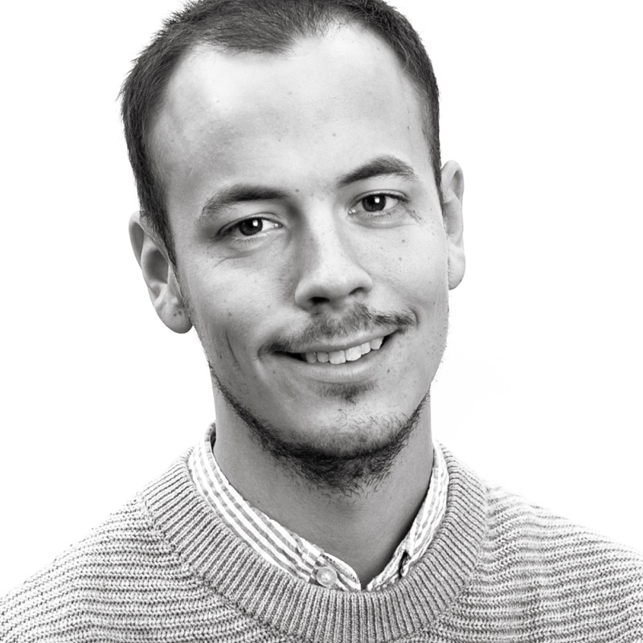

This is meHi! I'm Jesper Källgård, a UX Designer determied to create great digital experiences.
Contact me on LinkeInTankar om AI och UX
Förra året besökte jag UX London, där mycket handlade om AI:s och Machine Learning. Många talare…
Read (in swedish)En nybörjares guide till UX
Vad jobbar du med? Vad är UX? Frågorna om vad jag egentligen gör på dagarna är återkommande…
Read (in swedish)- Impact map
- User Journey
- User Tests
- Workshop